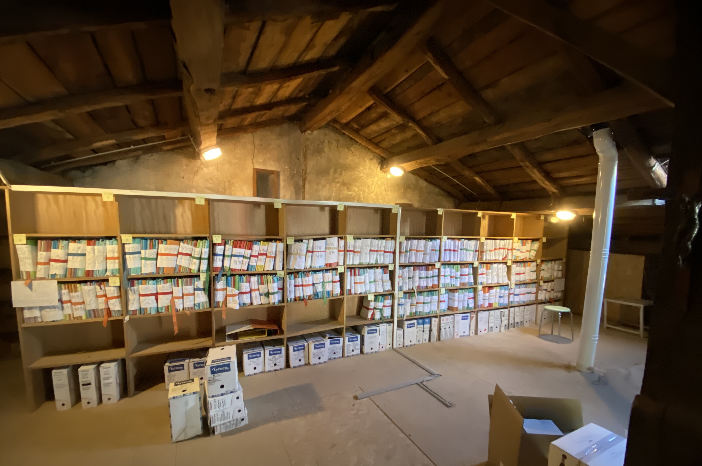

Avril 2023 & Septembre 2023
(Stage) Data Scientist
Meelo est une start-up Lilloise spécialisée dans la lutte contre le fraude. J'ai eu la chance d'intégrer leurs
équipes en tant que Stagiaire Data Scientist pendant 5 mois.
Lors de ce stage, j'ai développé un produit de lutte contre la fraude en utilisant des données de
web tracking récoltées chez un client de Meelo.
Ce produit est une application permettant, à partir d'un numéro client donné, de visualiser le profil digital
et comportemental de ce dernier. Cela permet de voir en un coup d'oeil si le client a eu un comportement suspect
lors de sa navigation.
Par ailleurs, j'ai participé à l'amélioration du programme de catégorisation des transactions bancaires
servant à faire de l'Open Banking.
Juin 2021 & Juin 2022
(Job) Palisseur chez Champagne Marc Houelle
J'ai travaillé deux étés de suite au sein de cette entreprise familiale, produisant du champagne depuis 1974.
Le rôle du palisseur est de préparer et d'entretenir la vigne pour optimiser la pousse du raisin.
Il s'agit d'enlever les tiges inutiles, puis de démêler le reste pour faciliter la pousse des futures grappes.
On relève ensuite les fils qui soutiennent la vigne pour avoir accès plus facilement aux grappes.
Et enfin, on procède au taillage pour raccourcir les tiges et alléger la vigne.
Juillet 2019 & Juillet 2022
(Job) Agent de rangement chez BGBJ Avocats Associés

J'ai travaillé à deux reprises au cabinet d'Avocats BGBJ & Associés, en activité depuis 1938.
Mon rôle lors de ces deux CDD était de classer, de numériser et d'archiver les dossiers.
Je me chargeais ensuite de détruire les dossiers périmés et de les évacuer.
J'ai également été amené à faire de la comptabilité via Excel, ainsi que de la rédaction de courriers
simples aux clients.
Août 2019 & Juillet 2020
(Job) Agent de tri et d'entretien dans un Centre de tri des déchets recyclables
J'ai effectué deux missions d'intérimaire au sein de deux centres de tri différents : Barisien (à Épinal) en 2019 et Citraval
(à Chavelot) en 2020.
Le rôle d'agent d'entretien consiste à ramasser les déchets coincés sous les machines de tri pour éviter que celles-ci se bloquent.
Le rôle d'agent de tri consiste à trier les déchets recyclables à la chaîne.
Février 2020
(Bénévolat) Donneur de voix germanophone au Loria

Enregistrement de plusieurs séries de phrases en allemand, destinées à étudier acoustiquement les
réalisations des locuteurs. Ces expériences portent sur l'étude des différents aspects de la production
de la parole.